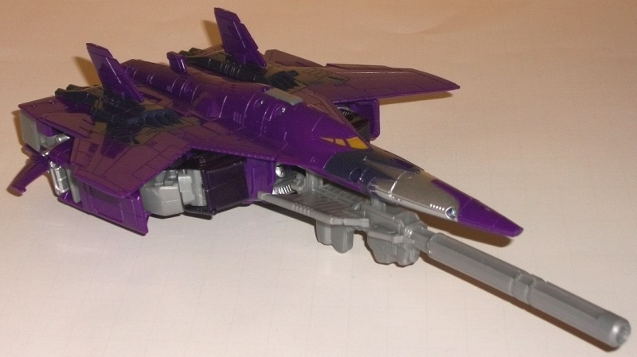
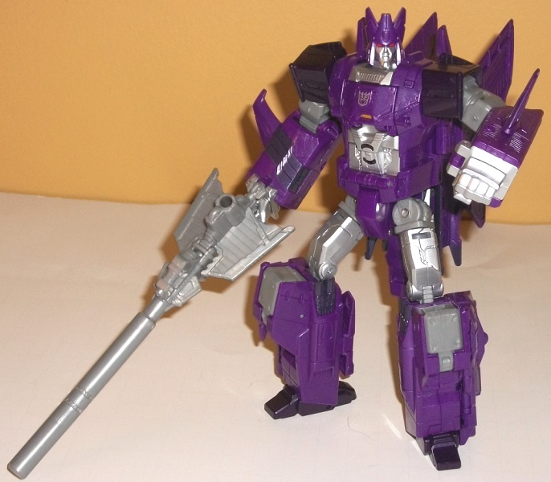
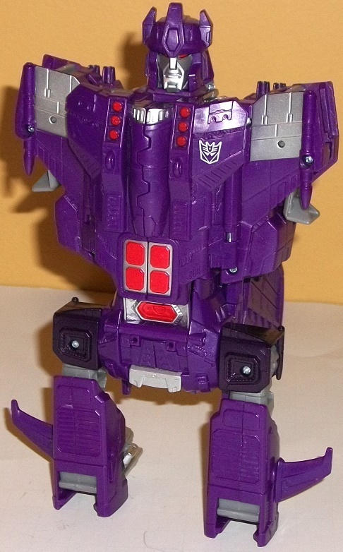

Allegiance
: Decepticon
Size
: Voyager
Difficulty of Transformation to Robot
:
Easy
Difficulty of Transformation to Torso
:
Medium
Color Scheme:
Moderately dark royal
purple, very dark brownish purple, light milky gray, and some silver, light
metallic bronze, and red
Rating
: 9.1
(NOTE: Because this is a repaint, this is not a full-blown review. This mainly covers any changes made to the mold and the color scheme, and merely compares it to Combiner Wars Silverbolt. For a review on the mold itself, read the review of Combiner Wars Silverbolt here .)
Cyclonus' color scheme
is kept largely consistent with his G1 color scheme with the majority color
by far being a somewhat dark shade of royal purple, which frankly always
has and always will look pretty darned nice as a main color on a Decepticon.
It's a bit odd; the purple doesn't outright have glitter in it, but it
does look like it has a slight metallic sheen to it, maybe because of a
little bit of milkiness? Anyways, it looks great. To complememt and contrast
against this purple, there's also an even darker shade of purple, which
in theory is nice-- but this shade actually has a bit of brown mixed in
with it, and because of this it just doesn't look as good as a "purer"
purple would have on the myriad parts it's used, like on Cyclonus' shoulders,
feet, details on his wings and thrusters, and in the middle of his nosecone.
Cyclonus' other major color is, unfortunately, that really blah light milky
gray that is just boring and really should have had some glitter in it
to give it more of an interesting, metallic look to it. Thankfully, the
light gray is only a "major color" primarily because of Cyclonus' large
gun; it's only used a bit on some other, more minor pieces, like Cyclonus'
hip joints and upper arms. Most of the parts that are "gray" are painted
silver, which looks marvelous, particularly against the shades of purple;
the abdomen and upper legs look particularly good with silver. This silver,
combined with the dark purple and the metallic bronze windows on Cyclonus'
vehicle mode, really help to liven up his vehicle mode from being too overly
purple, and his robot mode is even more broken up than that, so no worries
about him being too one-tone on this release. He's also got lovely Decepticon-red
eyes, for both his regular robot mode and his torso mode.
What's more noteworthy
about Cyclonus is how many mold changes he's got from Silverbolt; he's
almost a re-shell of that toy that uses the same transformation scheme
and proportions, with a new head, new wings and jet body, a new combiner
head, combiner chest, a new nosecone, and new details on the chest and
abdomen. Nearly all of these details are very true to Cyclonus' G1 form;
the nosecone in particular looks very slick, curved, and futuristic, and
is one of my favorite details on this toy in how "spot on" they got it
to the G1 animation model. The wings also predictably are now molded to
come forward a bit from the main body, which still has a fair amount of
aircraft-style mold detailing on it but has a few more "futuristic" details
on it like the odd vents near the center of the vehicle mode. The robot
legs and arms are largely the same as Silverbolt's, but Cyclonus does have
two small extra little removable wing accessories that are small enough
for him to hold as little shivs, if you so desire, or they can just plug
into the sides of his lower arms. The chest is smoother on Cyclonus, and
more in keeping with his G1 design. His head is pretty accurate to his
traditional sculpt as well, though the side horns are a bit thicker than
on more recent modern toys of him. As is befitting Cyclonus, he's got a
pretty neutral expression on his face. Additionally, for torso mode, Cyclonus
becomes "Galvatronus", which is kind of weird but I guess better than "Super
Cyclonus" or summat. The combiner head is unmistakably Galvatron's with
the crown portion de-emphasized a bit and a more neutral expression on
the face-- perhaps some of Cyclonus' influence?-- though I'm curious what
Galvatron's dominating personality does when he's not in Galvatronus mode.
Anyways, the chest halves have also been resculpted and now match Galvatron's
G1 chest pretty much to a tee (albeit with more purple), with the familiar
four red details on his abdomen and some sleek, Galvatron-y details on
the rest of the chest.
Cyclonus may have an
odd gimmick-- I never figured he'd be the combining sort, and combining
into a different, known character who is also his superior is an odd choice--
but he is a good re-use of the Silverbolt mold, with a lot of great remolding.
The vehicle mode in particular has an impressive amount of new details,
with the nosecone looking stellar. Silverbolt's robot mode proportions
suit Cyclonus, and the Galvatronus mode-- while rather weird in concept--
looks pretty good. If you want a bigger Cyclonus than the
Universe
2.0 deluxe mold
and one with a beefier robot mode, this is the version
you want to pick up (regardless of whether you want to combine him or not).
That is, unless all the kibble below the vehicle mode that's inherent in
the mold design really bothers you (it is hidden a little better with Cyclonus'
wingspan when compared to Silverbolt's), in which case the Universe 2.0
mold, with a slightly better jet mode, is for you.
Review by Beastbot